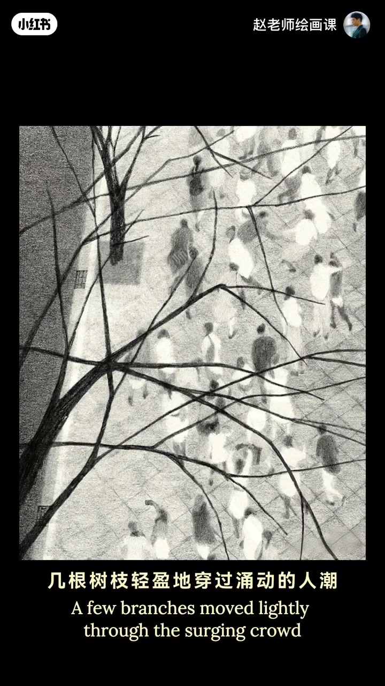
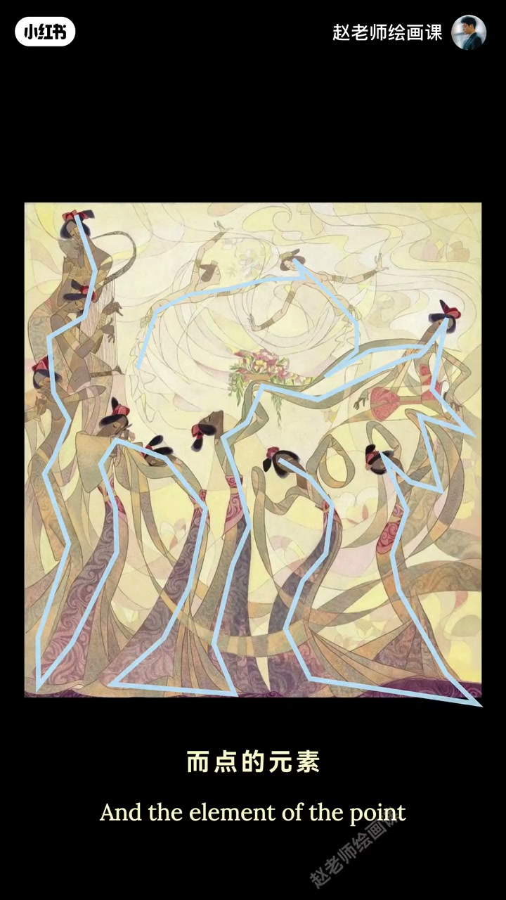
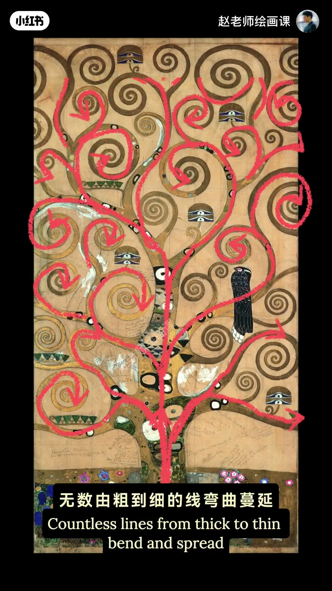
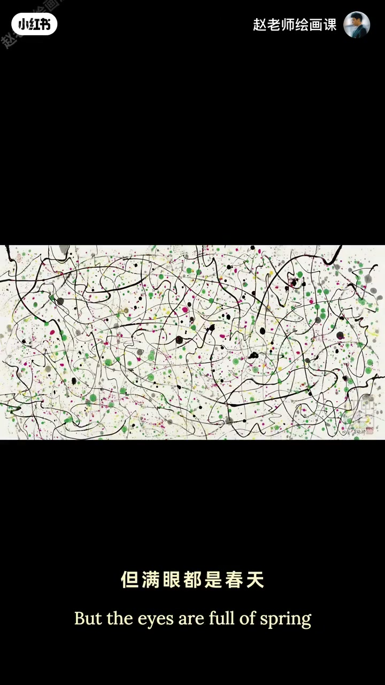

内容要点
线条能有多大魔力？几根树枝轻盈穿过涌动人潮格外灵动；去掉这些线，瞬间平淡无奇像没了灵魂。插画侍女通体流畅曲线，点元素也转化成另一条视觉动线，穿插交织把舞蹈与音乐韵律推向高潮。克里姆特无数由粗到细弯曲蔓延的线如触须充满生命力，彩点跃动注入感染。吴冠中《春如线》看不到具体树花却满眼春天——灵动柔韧的线就是春风雨丝与生命脉络，彩点如初绽花苞、惊起飞鸟。笔直线传理性永恒几何美，点缀有机人体形成对比。线主导关键：释放不同形态的情绪张力，再配点与面适度辅助。
知识结构
去线失灵魂；曲线侍女＋点串动线。
克里姆特触须线；吴冠中线即春天。
释放线的情绪张力；点面适度辅助。
以线主导时，先让线的形态（曲／直、粗细、纹理）说出情绪，再用点与面当配角，勿抢戏。
00:00-00:50去线失魂：曲线如何主导
树枝线条穿过人潮显灵动；试着去掉这些线——瞬间平淡，好像没了灵魂。这就是线在视觉构成中的魅力。
插画舞动侍女通体由流畅曲线描绘；点的元素此刻也转化成另一条视觉动线，穿插交织把舞蹈与音乐的韵律美推向高潮。00:16／00:40。


00:50-02:01克里姆特与吴冠中：线即生命／春天
连绵线条常唤醒对生命的想象。克里姆特笔下由粗到细弯曲蔓延的线如同伸展触须，充满生命力；色彩与质感各异的小点跃动其间，注入强烈感染。
吴冠中《春如线》：看不到具体树和花，但满眼都是春天——灵动纷繁柔韧的线条就是春风拂柳、雨丝涟漪与万物生长的脉络；跳跃彩点仿佛初绽花苞与惊起飞鸟，与线共谱春的乐章。01:00／01:30。


02:01-02:58直线几何＋线主导口令
笔直的线可传递理性与永恒的几何美感，再点缀有机形态的人体，形成特别的艺术对比。即使只用线这一单一元素，也能通过色彩、粗细与纹理的编排创造迷人韵味。
要让线真正主导：关键在于充分释放它不同形态下的情绪张力，再配合点与面适度辅助，表现力一定不负所望。
完整转录（68段）
以下文本由 Whisper medium 模型自动转录，可能存在少量识别误差，已尽可能修正。
线条能有多大的磨礼
来 感受一下
几根树枝轻盈的穿过涌动的人潮
显得格外灵动
来 我们试着去掉这些线
怎么样
是不是瞬间平淡无奇
好像没了灵魂
对 这就是线
在视觉构成中的魅笔
比如这幅插画作品中
舞动的侍女
通体由流畅的曲线来描绘
而点的元素
此刻也转化成了另一条视觉动线
穿插 交织剪
把舞蹈与音乐的韵律美
推向了高潮
连绵不断的线条
往往能唤醒我们对生命的想象
比如克里姆特笔下
无数根由粗到细的线条
弯曲蔓延
如同章鱼强忍的触须
充满了生命力
而色彩与质感各异的小点
越动期间
为画面注入了强烈的感染
如果说有一个人
用最抽象的线
补写了最东方的诗
大家猜猜他是谁
对 一定是吴冠中
在这幅《春如线》中
你看不到具体的树和花
但满眼都是春天
那些灵动 纷繁 柔韧的线条
就是春风拂过柳梢的痕迹
是与丝滑落在湖面的联谊
使万物生长的生命脉络
线条在此刻
就是春天本身
而那些跳跃期间的彩点
彩点仿佛是初战的花苞
晶体的飞鸟
与线条共同补写了一曲
吞的乐章
笔直的线可以传递出
理性与永恒的几何美感
再点缀以有机形态的人体
形成一种特别的艺术对比
即使只用线这一单一元素
也能通过色彩 粗细
与纹理的编排
创造出一种迷人的视觉韵味
所以我们可以总结一下
要想让线真正的主导画面
关键在于要充分释放它
不同形态下的情绪张力
再配合点与面的适度的辅助
画面的表现力一定不复所望
这就是以线主导的
点线面关系的强大之处
如果你想系统掌握
这些视觉艺术的底层逻辑
创作出高级又好看的作品
欢迎加入我的构成系统课程
我们课上见 拜拜